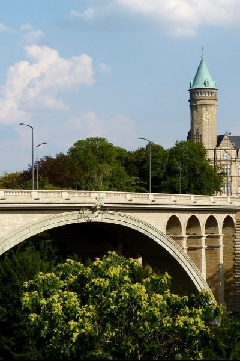
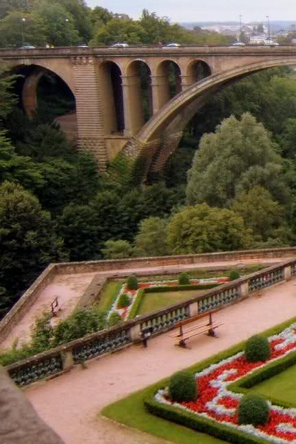
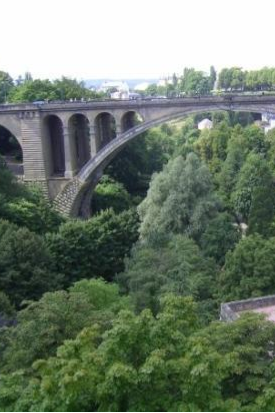
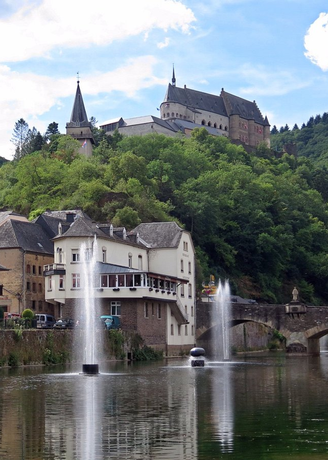
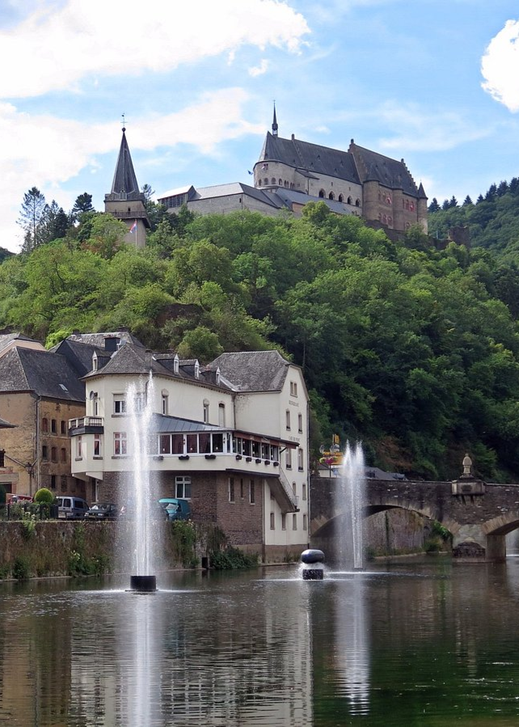
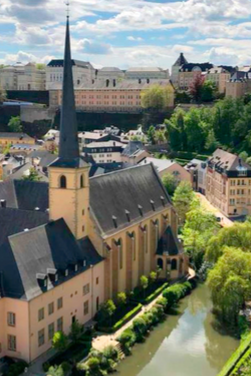
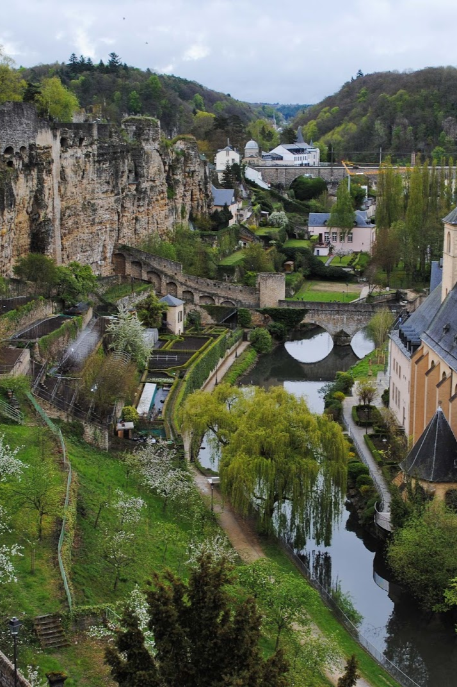
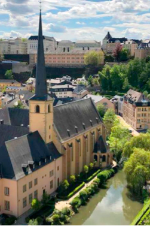
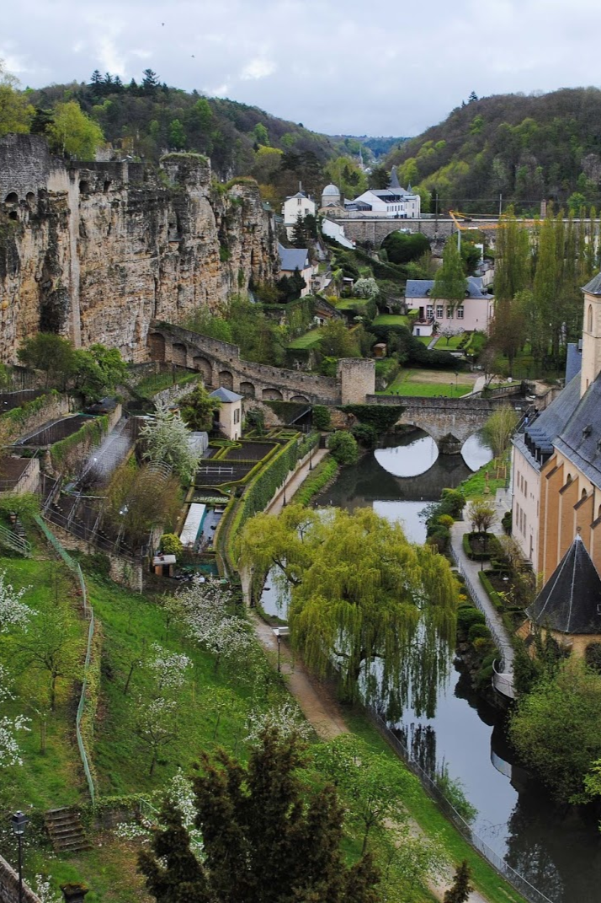

1. PONTE ADOLPHE
A Ponte Adolphe é um símbolo de independência nacional e oferece belas vistas do Vale Pétrusse, sendo um dos melhores lugares para fotos panorâmicas.



A Ponte Adolphe é um símbolo de independência nacional e oferece belas vistas do Vale Pétrusse, sendo um dos melhores lugares para fotos panorâmicas.
O Castelo de Vianden é um dos castelos mais bonitos da Europa, localizado no norte de Luxemburgo, com arquitetura medieval e vista deslumbrante.

 

Conhecido como a "varanda mais bonita da Europa", esse caminho oferece uma vista panorâmica da cidade velha e do Vale do Rio Alzette.
 



O elevador panorâmico liga os bairros altos e baixos de Luxemburgo e proporciona uma vista espetacular da cidade e do vale.
A Catedral de Notre-Dame de Luxemburgo é um marco religioso com vitrais deslumbrantes e arquitetura gótica impressionante.